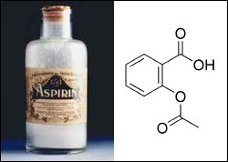
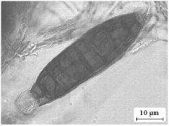

Skip ahead to:
Nature to Our Rescue
For millennia people have relied on natural remedies for relief from the diseases or illnesses they suffered. These concoctions were prepared by the druids, witch-doctors, priests or any other physicians of the day, to be consumed or applied to wounds. With the great advances of medicine over the past two centuries (for example, the discovery of antibiotics and vaccines), it appears that we have moved on a long way from these archaic practices. Now drugs are generally prescribed and dispensed to us as white tablets housed in a simple sterile container.
However, we are still heavily dependent upon nature to provide us with new families of drugs to combat our ever-worsening ailments. Aspirin is the classic example of a drug developed from a natural product (Figure 1), which in this case was found in willow tree bark. According to a recent survey [1] by the National Cancer Institute, 61% of the 877 small-molecule chemicals introduced worldwide as drugs during 1981–2002 can be traced to or were inspired by natural products. This highlights the significance of natural product chemistry.
After deciding to continue to study chemistry, I wanted to research an area that might have some practical use and could especially benefit people. I was given the opportunity to research the making, or synthesis, of a bioactive natural product named Aigialomycin D. Bioactive natural products (bioactives) are compounds removed from living things that exhibit biological activity, including anti-inflammatory, anti-viral and anti-cancer activity. These characteristics mean that bioactives can often be turned into useful drugs. In the real world, however, most useful natural products are found in very low concentrations. They need to be made in the lab before they can be fully studied or produced for use in medical drugs.
Aigialomycin D gets its name from the mangrove fungus Aigialus parvus from which it was taken (Figure 2). Initial studies of this natural product found it to be toxic towards the cancer cells in skin, breast and kidney cancers. It was also found to be moderately active against malaria. Aigialomycin D has a relatively simple structure compared with many anti-cancer agents derived from natural products. This means chemists should be able to make it much more easily than complex products.
By itself, Aigialomycin D does not show enough anti-cancer activity to make it worthy for drug trials. What I hope to do is make changes to the natural product to improve its anti-cancer ability. To achieve this, I’ll need to understand how it acts in killing the cancer cells. I plan to use biological tests to identify the part of the cell it targets in order to kill them. Once I know that, I hope to use computer programs to model the interaction between the product and its target. This modelling may help to predict changes I’ll need to make to increase this interaction and therefore increase the activity of the product.
Once I have designed a modified version of the natural product, I should be able to adapt the methods used to make the natural product for making these new analogues. Biological studies of the new products will show whether the changes improve or lower the compound’s activity.
It’s unlikely that my research will lead directly to an anti-cancer drug. But I do hope the information I find about the importance of certain pieces of the compound will help to develop other potential drug candidates.
Footnotes
[1] David J. Newman, Gordon M. Cragg, and Kenneth M. Snader. Journal of Natural Products, vol 66 (2003), p 1022.